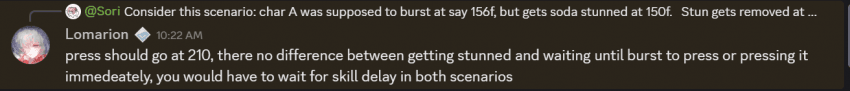
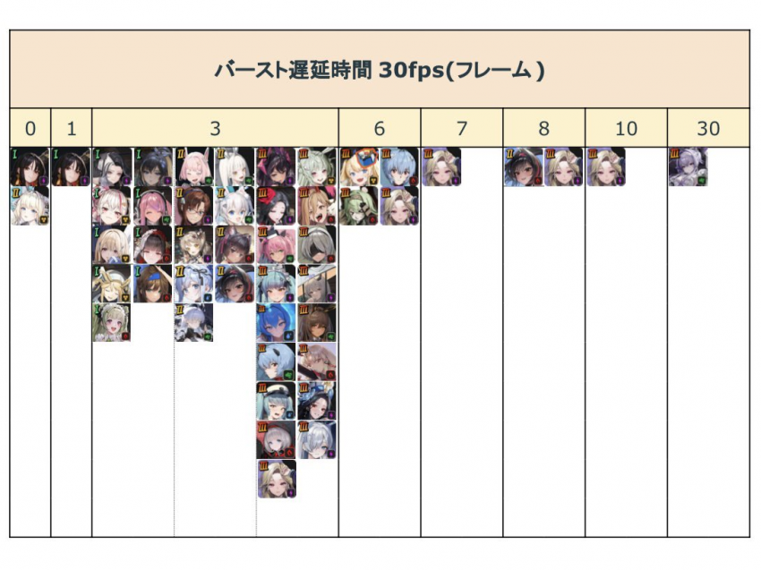

1. 버스트 버튼을 '누르는' 딜레이 자체는 존재하지 않음 - 예로 소다스턴을 150f 에 당했을시 210f 에 스턴 풀리고 그 버스트가 나감.

2. 각 스킬별로 버스트가 발동되고, 효과가 들어가기까지 딜레이가 다름. 블랑 불굴은 6프레임(아래 표 참고) 후에 적용됨.
아래 표는 30fps 기준이라 수치*2 해야함.
목단은 일부 효과는 0프레임 즉시 발동, 일부 효과는 2프레임 딜레이 후 발동.

근데 나유타, 노아 동프레임이면 나유타 딜이 무적전에 먼저 들어가는걸로 알고 있는데, 으음..